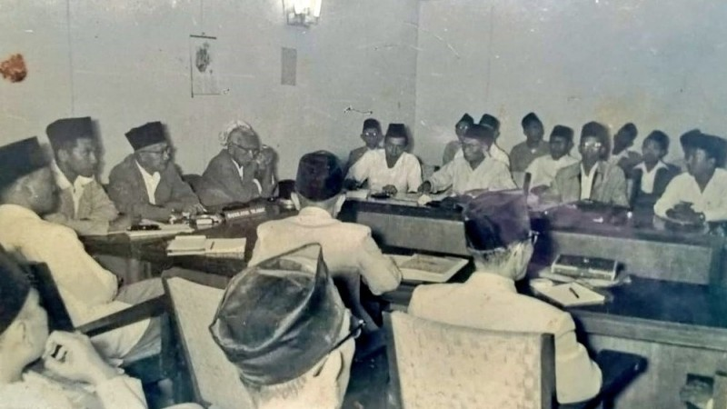

https://i0.wp.com/fahum.umsu.ac.id/wp-content /uploads/2023/06/demokrasi-terpimpin-pengert ian-tujuan-ciri-kelebihan-kelemahan-dan-penyi mpangannya.jpg?fit=500%2C281&ssl=1
Demokrasi Terpimpin atau Orde Lama (1959–1965) adalah masa ketika Presiden Indonesia Soekarno berkuasa di bawah naungan Undang-Undang Dasar 1945 yang asli. Demokrasi terpimpin sendiri adalah sebuah sistem demokrasi yang seluruh keputusan serta pemikiran berpusat pada pemimpin negara.
Berikut tujuan Demokrasi Terpimpin:
- Nasionalisme
Mempertahankan dan memperkuat kedaulatan nasional serta kemandirian negara dalam berbagai aspek kehidupan, termasuk politik, ekonomi, dan budaya. - Keadilan sosial
Mengurangi kesenjangan sosial dan ekonomi antara berbagai kelompok dalam masyarakat. Tujuan ini termasuk pengentasan kemiskinan, pemerataan kesempatan, dan akses yang lebih adil terhadap sumber daya dan pelayanan publik. - Kesejahteraan rakyat
Meningkatkan kesejahteraan masyarakat secara umum dengan meningkatkan standar hidup, mengurangi pengangguran, menyediakan pelayanan kesehatan dan pendidikan yang terjangkau, serta meningkatkan kualitas hidup masyarakat. - Kemandirian ekonomi
Mendorong pembangunan ekonomi nasional dengan mengurangi ketergantungan terhadap pihak asing dan mempromosikan pengembangan industri, pertanian, dan sektor-sektor ekonomi strategis lainnya. - Modernisasi sosial dan budaya
Mengubah dan memodernisasi masyarakat dalam hal nilai-nilai, norma, dan gaya hidup, sambil tetap mempertahankan warisan budaya dan tradisi yang berharga. - Persatuan dan kebersamaan
Membangun persatuan dan kesatuan nasional, memperkuat ikatan sosial, dan meningkatkan rasa kebersamaan antarwarga negara.
 https://nu.or.id/fragmen/peran-besar-fraksi-nu-dalam-dewan-konstituante-eakoe
Konsep sistem Demokrasi Terpimpin pertama kali diumumkan oleh Presiden Soekarno dalam pembukaan sidang konstituante pada tanggal 10 November 1956. Demokrasi Terpimpin menurut ketetapan MPRS No. VIII/MPRS/1965 yakni kerakyatan yang dipimpin oleh hikmah kebijaksanaan dalam permusyawaratan/perwakilan yang berintikan musyawarah untuk mufakat secara gotong royong di antara semua kekuatan nasional yang progresif revolusioner dengan berporoskan pada Nasakom.
Nasakom (kepanjangan dari nasionalisme, agama, dan komunisme) adalah konsep politik yang dicetuskan oleh Presiden Soekarno. Konsep ini berlaku di Indonesia dari 1959 (Demokrasi Terpimpin) hingga Orde Baru, tahun 1966. Gagasan Soekarno mengenai Nasakom ini merupakan upaya untuk menyatukan berbagai ideologi politik. Nasakom berupaya untuk menyatukan golongan nasionalis, agamis, dan komunis yang pada waktu itu memiliki kekuasaan terbesar dalam perpolitikan di Indonesia.
Partai Komunis Indonesia (PKI) menyambut "Demokrasi Terpimpin" Soekarno dengan hangat dan anggapan bahwa Soekarno mempunyai mandat untuk mengakomodasi persekutuan konsepsi yang sedang marak di Indonesia kala itu, yaitu antara ideologi nasionalisme, agama dan komunisme yang dinamakan Nasakom.
Era "Demokrasi Terpimpin" diwarnai kolaborasi antara kepemimpinan PKI dan kaum borjuis nasional dalam menekan pergerakan-pergerakan independen kaum buruh dan petani Indonesia. Kolaborasi ini tetap gagal memecahkan masalah-masalah politis dan ekonomi yang mendesak Indonesia kala itu. Pendapatan ekspor Indonesia menurun, cadangan devisa menurun, inflasi terus menaik dan korupsi kaum birokrat dan militer menjadi wabah sehingga situasi politik Indonesia menjadi sangat labil dan memicu banyaknya demonstrasi di seluruh Indonesia, terutama dari kalangan buruh, petani, dan mahasiswa.
Kebijakan Politik Dalam Negeri
Pembentukan MPRS dan DPAS merupakan salah satu upaya pemerintah untuk menguatkan kedudukan presiden sebagai pemimpin revolusi dan negara.
Dengan adanya lembaga-lembaga ini, presiden dapat mengendalikan arah politik nasional sesuai dengan visi dan misinya. Namun, pembentukan
MPRS dan DPAS juga menimbulkan kritik dari sebagian kalangan yang menilai bahwa lembaga-lembaga ini tidak demokratis karena anggotanya
ditunjuk oleh presiden tanpa melalui pemilihan umum.
Front Nasional adalah organisasi politik yang dibentuk oleh Presiden Soekarno pada tahun 1960 dengan tujuan untuk menghimpun semua
kekuatan nasional yang revolusioner dalam satu barisan untuk melawan imperialisme dan neokolonialisme. Dengan adanya Front Nasional,
diharapkan semua elemen bangsa dapat bersatu dan bekerja sama untuk membangun Indonesia. Namun, pembentukan Front Nasional juga
menimbulkan masalah karena tidak semua partai politik dan organisasi massa bersedia bergabung dengan Front Nasional. Beberapa partai
politik dan organisasi massa yang menolak bergabung dengan Front Nasional antara lain adalah Partai Masyumi, Partai Sosialis Indonesia
(PSI), Partai Katolik, Partai Murba, dan Himpunan Mahasiswa Islam (HMI).
- Pembentukan DPR-GR
Pembentukan DPR-GR merupakan salah satu upaya pemerintah untuk mengatasi krisis politik dan ekonomi yang terjadi pada masa demokrasi liberal. Dengan adanya DPR-GR, diharapkan pemerintah dapat lebih mudah menjalankan program-program pembangunan nasional tanpa terhambat oleh oposisi dari DPR. Namun, pembentukan DPR-GR juga menimbulkan kontroversi karena dianggap sebagai pelanggaran terhadap hak-hak rakyat untuk memilih wakil-wakilnya secara demokratis. - Pembubaran partai Masyumi dan PSI
Pada tahun 1960, Presiden Soekarno mengeluarkan Penpres No. 7 Tahun 1960 yang membubarkan partai Masyumi dan PSI serta melarang kegiatan-kegiatan mereka. Alasan pembubaran partai Masyumi dan PSI adalah karena kedua partai ini diduga terlibat dalam pemberontakan PRRI/Permesta yang terjadi di Sumatera dan Sulawesi pada tahun 1958-1961. Namun, pembubaran partai Masyumi dan PSI juga menimbulkan reaksi negatif dari sebagian masyarakat, khususnya dari kalangan umat Islam dan intelektual yang merasa hak-hak mereka sebagai warga negara dilanggar oleh pemerintah. - Pemasyarakatan ajaran Nasakom
Pemasyarakatan ajaran Nasakom merupakan salah satu upaya pemerintah untuk menciptakan kesatuan ideologi dan visi nasional di tengah-tengah keragaman bangsa Indonesia. Dengan adanya pemasyarakatan ajaran Nasakom, diharapkan rakyat Indonesia dapat menghargai perbedaan dan bersikap toleran terhadap sesama warga negara. Namun, pemasyarakatan ajaran Nasakom juga menimbulkan tantangan dan masalah karena tidak semua golongan menerima dan mengikuti ajaran Nasakom dengan sepenuh hati. Beberapa kelompok yang merasa tidak sejalan dengan ajaran Nasakom termasuk orang Islam garis keras, sosialis non-komunis, liberal-demokratis, dan regionalis. - Deklarasi Ekonomi
Deklarasi Ekonomi adalah dokumen yang dikeluarkan oleh Presiden Soekarno pada tanggal 3 April 1963 yang berisi tentang garis-garis besar kebijakan ekonomi nasional pada masa demokrasi terpimpin. Dengan adanya Deklarasi Ekonomi, diharapkan Indonesia dapat membangun ekonomi yang berkeadilan, berdaya saing, dan berkelanjutan. Namun, Deklarasi Ekonomi juga menimbulkan dampak dan resiko yang besar bagi Indonesia, seperti memicu reaksi keras dari negara-negara Barat, menyebabkan inflasi yang tinggi, menimbulkan ketidakpuasan dari sebagian rakyat yang merasa tidak mendapatkan manfaat.
.
Kebijakan Politik Luar Negeri
Kelebihan Demokrasi Terpimpin
Politik mercusuar menjadi salah satu penyebab mengapa demokrasi terpimpin mengalami kegagalan karena proyek ini
telah menghabiskan dana sangat besar.
Irian Barat menjadi program kerja wajib pada kabinet masa demokrasi terpimpin. Hal ini mengingat berdasarkan putusan
Konferensi Meja Bundar pada tahun 1949, masalah Irian Barat akan diselesaikan dalam jangka waktu setahun. Namun, Belanda
justru menunda penyelesaian Irian Barat sehingga Indonesia harus kembali merebut wilayah NKRI sepenuhnya. Ada beberapa
tindakan yang dilakukan oleh Soekarno dalam menyelesaikan permasalahan Irian Barat yaitu konfrontasi politik, perjuangan
diplomasi, konfrontasi ekonomi, dan konfrontasi militer.
Konfrontasi antara Indonesia dan Malaysia dipicu oleh rencana Singapura dan Malaysia bergabung dan membentuk Federasi
Malaysia yang dianggap Soekarno sebagai proyek neokolonialisme Inggris untuk mengamankan kekuasaannya di Asia Tenggara.
Indonesia dan Filipina menolak dengan tegas rencana tersebut. Untuk menengahi permasalahan ini maka dilakukanlah Konferensi
Maphilindo (Malaysia, Filipina dan Indonesia) pada 31 Juli – 5 Agustus 1963 di Filipina. Hasil dari Konferensi Maphilindo
adalah 3 resolusi penting yaitu Komunike Bersama, Persekutuan Manila dan Deklarasi Manila.
Penyimpangan kebijakan politik luar negeri pada masa demokrasi terpimpin adalah pembentukan komando penyerangan yang
disebut Komando Mandala Siaga berdasarkan keputusan Dwikora. Hal ini tidak sesuai dengan prinsip politik luar negeri
bebas aktif Indonesia.
Politik Mercusuar bertujuan menonjolkan kemegahan Indonesia di mata dunia dan bukan demi kesejahteraan rakyat. Demi
mewujudkan tujuan tersebut, Soekarno melaksanakan proyek monumental diantaranya:
 https://akcdn.detik.net.id/community/media/visu
al/2023/03/27/ganefo_169.jpeg?w=700&q=90
https://akcdn.detik.net.id/community/media/visu
al/2023/03/27/ganefo_169.jpeg?w=700&q=90
Kekuasaan demokrasi terpimpin yang terpusat pada pemimpin atau kelompok kecil dapat membawa stabilitas politik yang lebih
besar, karena keputusan dapat diambil dengan cepat dan efisien tanpa perlu melalui proses panjang dan rumit.
- Pengambilan keputusan efektif
Dalam demokrasi terpimpin, pemimpin atau kelompok yang dianggap memahami kebutuhan dan aspirasi rakyat memiliki kekuasaan yang signifikan dalam pengambilan keputusan. Hal ini memungkinkan kebijakan yang cepat dan efektif dalam menjawab kebutuhan masyarakat. - Fokus pada tujuan sosial dan ekonomi
Demokrasi terpimpin menempatkan penekanan yang kuat pada pencapaian tujuan sosial dan ekonomi yang dianggap penting bagi masyarakat. Hal ini dapat mengarah pada upaya yang lebih besar untuk mengurangi kesenjangan sosial dan meningkatkan kesejahteraan masyarakat secara umum. - Mobilisasi massa
Demokrasi terpimpin sering kali memobilisasi massa dalam rangka mencapai tujuan-tujuan sosial dan ekonomi. Partisipasi aktif masyarakat dapat memberikan kekuatan dan dukungan yang lebih besar untuk melaksanakan program-program pemerintah.
 https://assets.kompasiana.com/items/album/202
https://assets.kompasiana.com/items/album/2023/01/15/demokrasi-terpimpin-63c3a49b08a8b559f3187892.jpg?t=o&v=770
Kekurangan Demokrasi Terpimpin
Penyimpangan Demokrasi Terpimpin
Demokrasi terpimpin dapat membatasi kebebasan politik, termasuk kebebasan berpendapat, kebebasan pers, dan kebebasan
berserikat. Kritik terhadap pemerintah sering kali ditindas dan oposisi politik dibatasi.
Dalam demokrasi terpimpin, kekuasaan cenderung terpusat pada pemimpin atau kelompok kecil yang berkuasa. Hal ini dapat
menyebabkan konsentrasi kekuatan politik dan ekonomi yang tidak sehat, yang dapat mengarah pada penyalahgunaan kekuasaan
dan korupsi.
Pemerintahan dalam demokrasi terpimpin mungkin kurang akuntabel karena kendali yang kuat dalam pengambilan keputusan
dan kurangnya mekanisme pengawasan independen. Hal ini dapat mengakibatkan penyalahgunaan kekuasaan tanpa konsekuensi yang
memadai.
Demokrasi terpimpin seringkali membatasi partai politik dan oposisi yang dapat beroperasi secara efektif. Dominasi partai
tunggal atau kelompok politik yang kuat dapat menghambat munculnya alternatif politik dan pluralisme dalam sistem politik.

https://asset.kompas.com/crops/4CXHD7M-8aU
U_7skHhhhVSO3rZk=/0x0:1021x681/750x500/
data/photo/2020/03/06/5e620b0f2d88a.jpg
Tumbuhnya sistem yang otoriter di mana pemimpin atau kelompok kecil yang berkuasa mengendalikan dan membatasi kebebasan
individu, hak-hak politik, dan kebebasan berpendapat. Kritik terhadap pemerintah dapat ditindas, oposisi politik dihancurkan,
dan hak-hak asasi manusia dilanggar.
Demokrasi terpimpin sering kali menghasilkan pembatasan kebebasan individu seperti kebebasan berpendapat, kebebasan pers,
dan kebebasan berserikat. Pemerintah memiliki kendali yang kuat atas media massa dan sering kali menggunakan kekuasaan untuk
membatasi kritik terhadap kebijakan dan tindakan pemerintah.
Pemimpin atau kelompok yang berkuasa dapat memanipulasi proses politik, pemilihan umum, dan lembaga-lembaga negara untuk
mempertahankan dan memperluas kekuasaan mereka. Hal ini bisa melibatkan pengaturan hasil pemilihan, pelarangan partai
politik oposisi, atau penggunaan kekuatan negara untuk menghancurkan lawan politik.
Ketidaktransparanan dan konsentrasi kekuasaan yang tinggi dapat memberikan peluang bagi korupsi yang melibatkan pejabat
pemerintah, pemimpin politik, dan kelompok elit yang berkuasa. Korupsi dapat merusak integritas sistem politik dan merugikan
masyarakat secara ekonomi.
Meskipun demokrasi terpimpin menekankan tujuan sosial dan ekonomi, ada kemungkinan terjadinya ketidakadilan sosial.
Kekuasaan yang terpusat pada pemimpin atau kelompok kecil dapat menyebabkan ketimpangan ekonomi dan sosial yang signifikan.
Kelompok yang berkuasa dapat mendapatkan keuntungan yang tidak adil, sementara masyarakat umum tidak mendapatkan manfaat
yang dijanjikan.
Demokrasi terpimpin cenderung memiliki kurangnya akuntabilitas terhadap masyarakat. Pemimpin atau kelompok kecil yang
berkuasa mungkin tidak dipertanggungjawabkan secara efektif atas tindakan dan kebijakan mereka. Kurangnya transparansi dan
kontrol independen dapat mengakibatkan penyalahgunaan kekuasaan tanpa konsekuensi yang memadai.